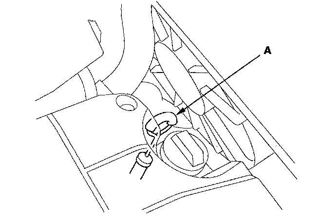
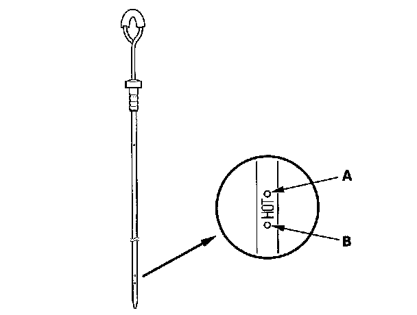
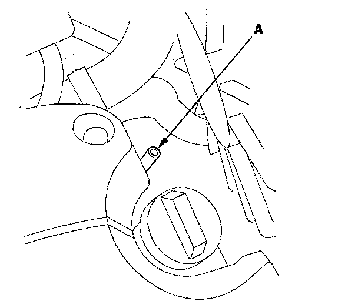

ATF Level Check
ATF Level CheckNOTE: Keep all foreign particles out of the transmission.
1. Park the vehicle on the level ground.
2. Warm up the engine to normal operating temperature (the radiator fan comes on) and turn the engine off. Do not allow the engine to warm up longer than the time it takes for the radiator fan to come on twice.
NOTE: Check the fluid level within 60-90 seconds after turning the engine off. Higher fluid level may be indicated if the radiator fan comes on twice or more.
3. Remove the dipstick (yellow loop) (A) from the dipstick guide tube, and wipe it with a clean cloth.

4. Insert the dipstick into the guide tube.
5. Remove the dipstick and check the fluid level. It should be between the upper mark (A) and lower mark (B).

6. If the level is below the lower mark, check for fluid leaks at the transmission, and hose and line joints. If a problem is found, fix it before filling the transmission.
NOTE: If the vehicle is driven when the ATF level is below the lower mark:
^ Transmission damage will result.
^ Vehicle does not move in any gear.
^ Vehicle accelerates poorly, and flares when starting off in the D and R positions.
^ The engine vibrates at idle.
7. If the level is above the upper mark, drain the ATF to proper level.
NOTE: If the vehicle is driven when the ATF level is above the upper mark, the vehicle may creep forward while in the N position, or have shifting problems.
8. If necessary, fill the transmission with the ATF through the dipstick guide tube opening (A) to bring the fluid level midway between the upper mark and lower mark of the dipstick. Do not fill past the upper mark. Always use Acura ATF DW-1 (ATF Z1 has been replaced by ATF DW-1, Honda Service News Nov 2010) Automatic Transmission Fluid (ATF). Using a non-Acura ATF can affect shift quality.

9. Insert the dipstick back into the dipstick guide tube.